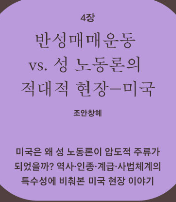
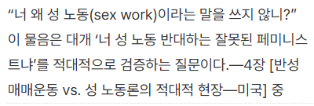
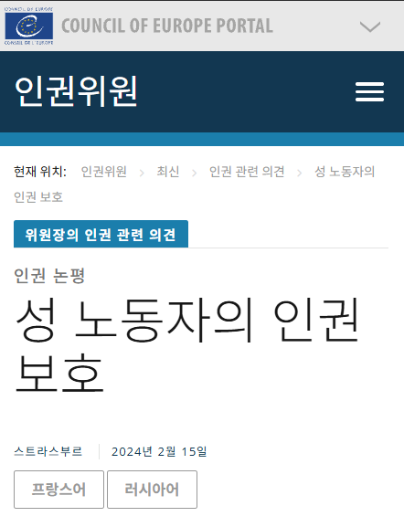
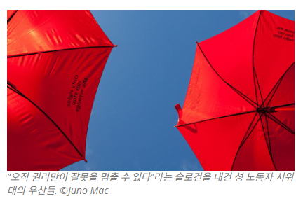
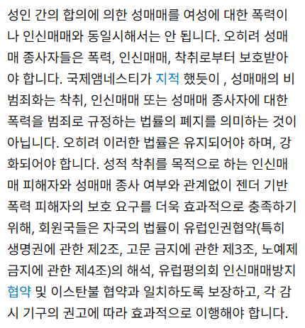
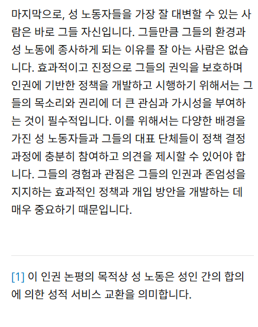

그건 바로 미국 PC에서 sex work론이 압도적 다수가 됐기 때문이다
성매매 담론은 크게 3가지가 있다
- 보수주의 - 성매매 불법화
- 스웨덴 모델(북유럽) - 성판매자를 성착취 피해자로 규정, 성판매자 비처벌, 성구매자와 알선자만 처벌
- sex work(성노동) - 성매매 비범죄화 또는 합법화, 성판매자 노동자화, 성구매자 및 알선자 비처벌
(성구매자와 알선자가 착취자가 아님)
한국 페미는 스웨덴 모델을 지지한다
문제는 미국 PC는 sex work를 지지하는 세력이 장악했다
성노동자가 노동자인 것을 인정하지 않으면 PC하지 않은 것이고, 페미니즘 내부에서 '나쁜 페미니스트'로 규정되는 거임
그리고 성노동자를 노동자로서 조명한 아노라 라는 영화가 칸 영화제 황금종려상, 미국 아카데미 작품상을 받은 이후 예술계에서도 주류가 됨
아노라 이후 한국 페미는 미국 PC를 받아들일 수 없게 되버렸다
유럽 평의회에서도 보수주의 vs 스웨덴모델 vs sex work 사이에서 분쟁이 심각한데,
유럽평회회 인권위원(Commissioner for Human Rights) 에서는 sex work 세력이 이겼다
물론 인권위원에서 이겼다는 게 유럽평의회 여론을 장악했다는 건 아니다
다만 국제적인 인권운동에서의 위상이 존나 강해졌다는 증거는 된다




국제적인 인권단체들 사이에서는 스웨덴 모델 보단 sex work를 지지하는 게 주류가 됐고,
그래서 한국 페미는 PC보다는 스웨덴 스타일을 선호하는 경향이 있다
물론 한국에선 징병제 떡밥이 나올 때는 스웨덴이 제외된다
한국뷔페식모델 ㄷㄷ